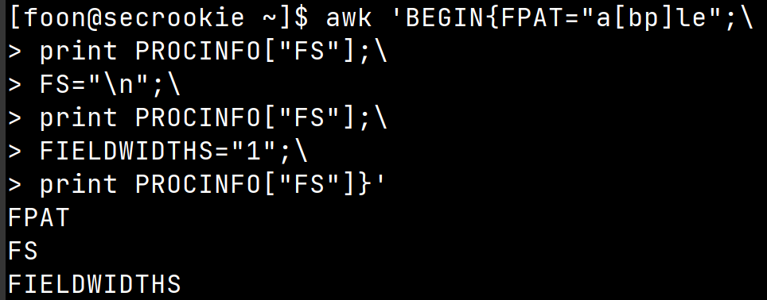

awk 用法
awk使用
0x1 格式
awk 选项 ‘BEGIN{action} pattern1 && pattern2 || pattern3{action1}pattern4{action2;action3}END{action}’ 文件
0x2 执行流程
awk首先执行BEGIN代码块
然后按照RS指定的分隔符从文件中读取文件，RS默认为\n,如果没有指定文件，则从标准输入读取
每读取一条记录
都将设置NR,FNR,RT,$0等变量
（默认）按照FS指定的分隔符分割字段，赋值给$1,$2,$3……$(NF-1),$NF,NF表示字段的个数
对main代码块的pattern进行匹配，匹配则执行action
执行END代码块
0x3分割字段的方法
在BEGIN中指定对每条记录都有效，
在main代码块则只对第二条及以后有效。在对第n行的action中指定，只对对接下来的行有效。
可以通过PROCINFO[“FS”]查看

FS（默认）
指定分隔符，默认为空格，默认情况下识别连续空格和其他空白符whitespace
FIELDWIDTHS
按字符格式分割字段 1 1:1代表第一个字段长度为1,跳过一个字符读取一个字符作为第二个字段，剩下的丢弃，字符读完为止
FPAT
按照正则表达式匹配字段
0x4 一些自带属性
RS 记录分割 RT 输出时用RT记录进行连接
FS 字段分割 FT 输出时用FT字段进行连接，，代表FT
FNR 单个输入的行号 NR 所有输入的行号
NF 字段数
0x5 特殊的空值
awk代码块中未被赋值的参数，会根据它进行的操作是算数运算还是其他运算进行初始化。

在处理第一行时，由于a为初始化，a可以为空字符串，0，false,由于前面进行了取反的布尔运算，所以a取false
取反后为True赋值给a,所以第一行pattern为真。
本博客所有文章除特别声明外，均采用 CC BY-SA 4.0 协议 ，转载请注明出处！